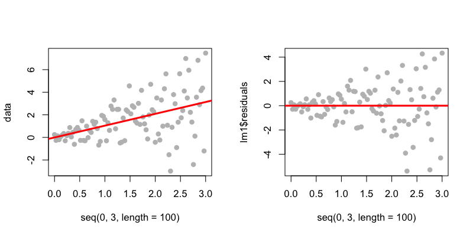
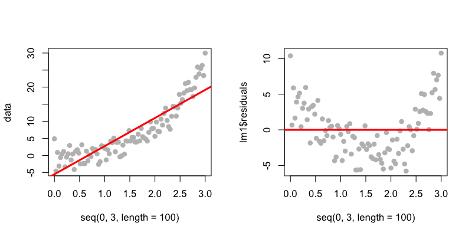
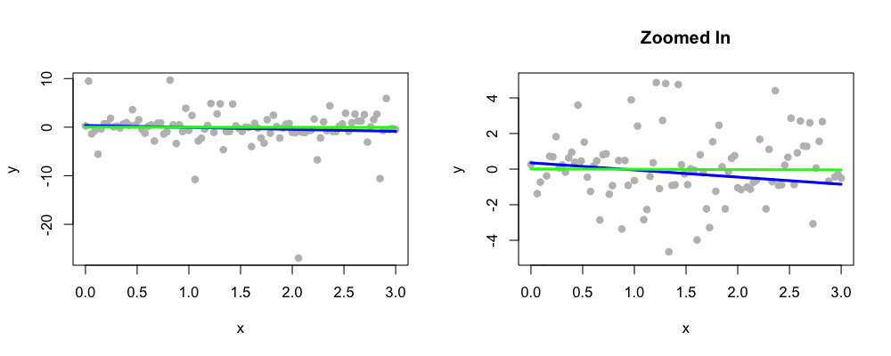
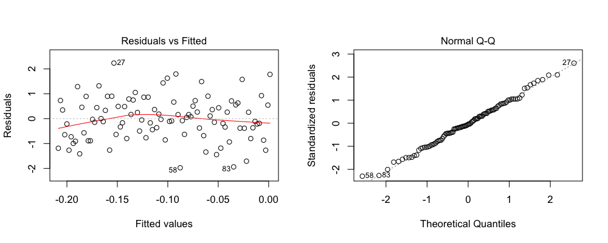

- Sometimes model checking/selection not allowed
- Often it can lead to problems
- Overfitting
- Overtesting
- Biased inference
- But you don't want to miss something obvious
Model checking and model selection
Jeffrey Leek, Assistant Professor of Biostatistics
Johns Hopkins Bloomberg School of Public Health
Model checking and model selection
Linear regression - basic assumptions
- Variance is constant
- You are summarizing a linear trend
- You have all the right terms in the model
- There are no big outliers
Model checking - constant variance
set.seed(3433); par(mfrow=c(1,2))
data <- rnorm(100,mean=seq(0,3,length=100),sd=seq(0.1,3,length=100))
lm1 <- lm(data ~ seq(0,3,length=100))
plot(seq(0,3,length=100),data,pch=19,col="grey"); abline(lm1,col="red",lwd=3)
plot(seq(0,3,length=100),lm1$residuals,,pch=19,col="grey"); abline(c(0,0),col="red",lwd=3)

What to do
- See if another variable explains the increased variance
- Use the vcovHC {sandwich} variance estimators (if n is big)
Using the sandwich estimate
set.seed(3433); par(mfrow=c(1,2)); data <- rnorm(100,mean=seq(0,3,length=100),sd=seq(0.1,3,length=100))
lm1 <- lm(data ~ seq(0,3,length=100))
vcovHC(lm1)
summary(lm1)$cov.unscaled
(Intercept) seq(0, 3, length = 100)
(Intercept) 0.03941 -0.01960
seq(0, 3, length = 100) -0.01960 0.01307
Model checking - linear trend
set.seed(3433); par(mfrow=c(1,2))
data <- rnorm(100,mean=seq(0,3,length=100)^3,sd=2)
lm1 <- lm(data ~ seq(0,3,length=100))
plot(seq(0,3,length=100),data,pch=19,col="grey"); abline(lm1,col="red",lwd=3)
plot(seq(0,3,length=100),lm1$residuals,,pch=19,col="grey"); abline(c(0,0),col="red",lwd=3)

What to do
- Use Poisson regression (if it looks exponential/multiplicative)
- Use a data transformation (e.g. take the log)
- Smooth the data/fit a nonlinear trend (next week's lectures)
- Use linear regression anyway
- Interpret as the linear trend between the variables
- Use the vcovHC {sandwich} variance estimators (if n is big)
Model checking - missing covariate
set.seed(3433); par(mfrow=c(1,3)); z <- rep(c(-0.5,0.5),50)
data <- rnorm(100,mean=(seq(0,3,length=100) + z),sd=seq(0.1,3,length=100))
lm1 <- lm(data ~ seq(0,3,length=100))
plot(seq(0,3,length=100),data,pch=19,col=((z>0)+3)); abline(lm1,col="red",lwd=3)
plot(seq(0,3,length=100),lm1$residuals,pch=19,col=((z>0)+3)); abline(c(0,0),col="red",lwd=3)
boxplot(lm1$residuals ~ z,col = ((z>0)+3) )

What to do
- Use exploratory analysis to identify other variables to include
- Use the vcovHC {sandwich} variance estimators (if n is big)
- Report unexplained patterns in the data
Model checking - outliers
set.seed(343); par(mfrow=c(1,2)); betahat <- rep(NA,100)
x <- seq(0,3,length=100); y <- rcauchy(100); lm1 <- lm(y ~ x)
plot(x,y,pch=19,col="blue"); abline(lm1,col="red",lwd=3)
for(i in 1:length(data)){betahat[i] <- lm(y[-i] ~ x[-i])$coeff[2]}
plot(betahat - lm1$coeff[2],col="blue",pch=19); abline(c(0,0),col="red",lwd=3)

What to do
- If outliers are experimental mistakes -remove and document them
- If they are real - consider reporting how sensitive your estimate is to the outliers
- Consider using a robust linear model fit like rlm {MASS}
Robust linear modeling
set.seed(343); x <- seq(0,3,length=100); y <- rcauchy(100);
lm1 <- lm(y ~ x); rlm1 <- rlm(y ~ x)
lm1$coeff
(Intercept) x
0.3523 -0.4011
rlm1$coeff
(Intercept) x
0.008527 -0.017892
Robust linear modeling
par(mfrow=c(1,2))
plot(x,y,pch=19,col="grey")
lines(x,lm1$fitted,col="blue",lwd=3); lines(x,rlm1$fitted,col="green",lwd=3)
plot(x,y,pch=19,col="grey",ylim=c(-5,5),main="Zoomed In")
lines(x,lm1$fitted,col="blue",lwd=3); lines(x,rlm1$fitted,col="green",lwd=3)

Model checking - default plots
set.seed(343); par(mfrow=c(1,2))
x <- seq(0,3,length=100); y <- rnorm(100); lm1 <- lm(y ~ x)
plot(lm1)


Model checking - deviance
- Commonly reported for GLM's
- Usually compares the model where every point gets its own parameter to the model you are using
- On it's own it doesn't tell you what is wrong
- In large samples the deviance may be big even for "conservative" models
- You can not compare deviances for models with different sample sizes
\(R^2\) may be a bad summary

Model selection
- Many times you have multiple variables to evaluate
- Options for choosing variables
- Domain-specific knowledge
- Exploratory analysis
- Statistical selection
- There are many statistical selection options
- Step-wise
- AIC
- BIC
- Modern approaches: Lasso, Ridge-Regression, etc.
- Statistical selection may bias your inference
- If possible, do selection on a held out sample
Error measures
- \(R^2\) alone isn't enough - more variables = bigger \(R^2\)
- Adjusted \(R^2\) is \(R^2\) taking into account the number of estimated parameters
- AIC also penalizes models with more parameters
- BIC does the same, but with a bigger penalty
Movie Data
download.file("http://www.rossmanchance.com/iscam2/data/movies03RT.txt",destfile="./data/movies.txt")
movies <- read.table("./data/movies.txt",sep="\t",header=T,quote="")
head(movies)
X score rating genre box.office running.time
1 2 Fast 2 Furious 48.9 PG-13 action/adventure 127.15 107
2 28 Days Later 78.2 R horror 45.06 113
3 A Guy Thing 39.5 PG-13 rom comedy 15.54 101
4 A Man Apart 42.9 R action/adventure 26.25 110
5 A Mighty Wind 79.9 PG-13 comedy 17.78 91
6 Agent Cody Banks 57.9 PG action/adventure 47.81 102
Model selection - step
movies <- movies[,-1]
lm1 <- lm(score ~ .,data=movies)
aicFormula <- step(lm1)
Start: AIC=727.5
score ~ rating + genre + box.office + running.time
Df Sum of Sq RSS AIC
- genre 12 2575 22132 721
- rating 3 40 19596 722
- running.time 1 237 19793 727
<none> 19556 728
- box.office 1 3007 22563 746
Step: AIC=720.8
score ~ rating + box.office + running.time
Df Sum of Sq RSS AIC
- rating 3 491 22623 718
<none> 22132 721
- running.time 1 1192 23324 726
- box.office 1 2456 24588 734
Step: AIC=717.9
score ~ box.office + running.time
Df Sum of Sq RSS AIC
<none> 22623 718
- running.time 1 935 23557 722
- box.office 1 3337 25959 735
Model selection - step
aicFormula
Call:
lm(formula = score ~ box.office + running.time, data = movies)
Coefficients:
(Intercept) box.office running.time
37.2364 0.0824 0.1275
Model selection - regsubsets
library(leaps);
regSub <- regsubsets(score ~ .,data=movies)
plot(regSub)

Model selection - bic.glm
library(BMA)
bicglm1 <- bic.glm(score ~.,data=movies,glm.family="gaussian")
print(bicglm1)
Call:
bic.glm.formula(f = score ~ ., data = movies, glm.family = "gaussian")
Posterior probabilities(%):
<NA> <NA> <NA> <NA>
0.0 100.0 100.0 18.2
Coefficient posterior expected values:
(Intercept) ratingPG ratingPG-13 ratingR
45.263 0.000 0.000 0.000
genreaction/adventure genreanimated genrecomedy genredocumentary
-0.120 7.628 2.077 8.642
genredrama genrefantasy genrehorror genremusical
13.041 1.504 -3.458 -12.255
genrerom comedy genresci-fi genresuspense genrewestern
1.244 -3.324 3.815 17.563
box.office running.time
0.100 0.016
Notes and further resources
- Exploratory/visual analysis is key
- Automatic selection produces an answer - but may bias inference
- You may think about separating the sample into two groups
The goal is not to get the "causal" model